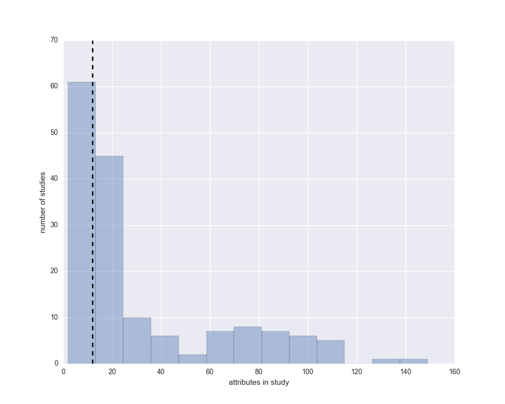
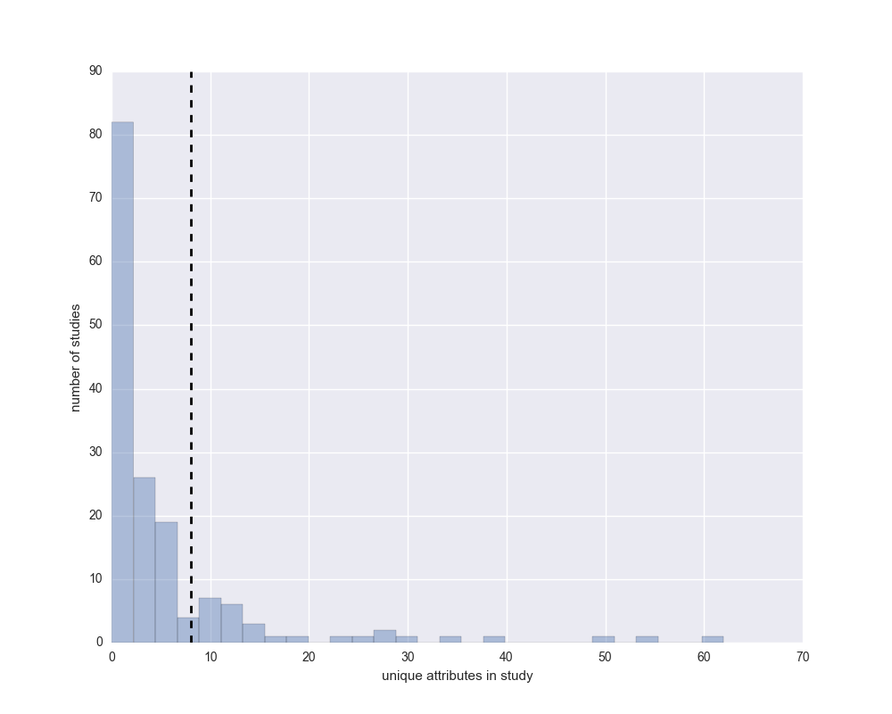
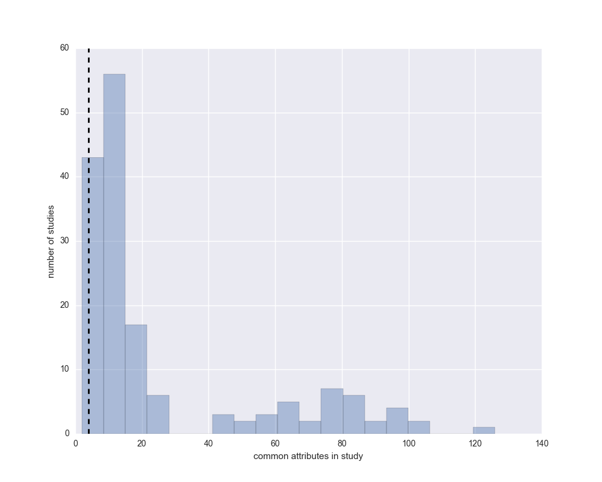

cBioPortal new study report
Report for study: ./acyc_mda_2015/raw_data_clinical.txt
Attribute matches
Below are the possible matches between attributes from existing data on the cBioPortal and the new study.
The metric used to detect each match is denoted by the symbols follwing the attribute name of the match.
Additionally, the number of studies in which the matching attribute occurs is given to indicate how popular the attribute is among existing studies.
In the second table, predictions are given as to whether an attribute is a patient or sample attribute.
The sample/patient prediction is based on what is most common for that particular attribute in the existing cBioPortal studies.
| New study attribute |
Possible matches |
| AGE |
AGE^ (found in 123 other studies) |
| FISH |
No matches found |
| FUSION_OTHER |
No matches found |
| HISTOLOGY |
HISTOLOGY^ (found in 11 other studies) |
| HISTOLOGY |
KATABI_PATH* (found in 1 other studies) |
| HISTOLOGY |
OFFICIAL_PATH* (found in 1 other studies) |
| MYB/MYBL1-FUSION |
No matches found |
| MYB_MYBL1_FUSION_METHOD |
No matches found |
| MYB_NFIB_REARRANGEMENT |
MYB_NFIB_REARRANGEMENT^ (found in 1 other stud... |
| OTHER NFIB FUSION |
No matches found |
| PNI |
No matches found |
| SEX |
SEX^* (found in 36 other studies) |
| SEX |
GENDER* (found in 83 other studies) |
| SITE |
No matches found |
| SIZE(CM) |
No matches found |
^ represents matches found based on the attribute names
* represents matches found based on clustering of the attribute values
Matching attribute types
| Matching Atrribute |
Patient or Sample prediction |
| AGE |
Patient |
| HISTOLOGY |
Patient |
| KATABI_PATH |
Patient |
| OFFICIAL_PATH |
Patient |
| MYB_NFIB_REARRANGEMENT |
Patient |
| SEX |
Patient |
| GENDER |
Patient |

Comparison between the number of attributes in the new study and the number of attributes in each existing study on cBioPortal. The dashed black line indicates the number of attributes in the new study, while the histogram shows the data for existing cBioPortal studies.

Comparison between the number of unique attributes in the new study and the number of unique attributes in each existing study on cBioPortal. The dashed black line indicates the number of unqiue attributes in the new study, while the histogram shows the data for existing cBioPortal studies.

Comparison between the number of common attributes in the new study and the number of common attributes in each existing study on cBioPortal. The dashed black line indicates the number of common attributes in the new study, while the histogram shows the data for existing cBioPortal studies.